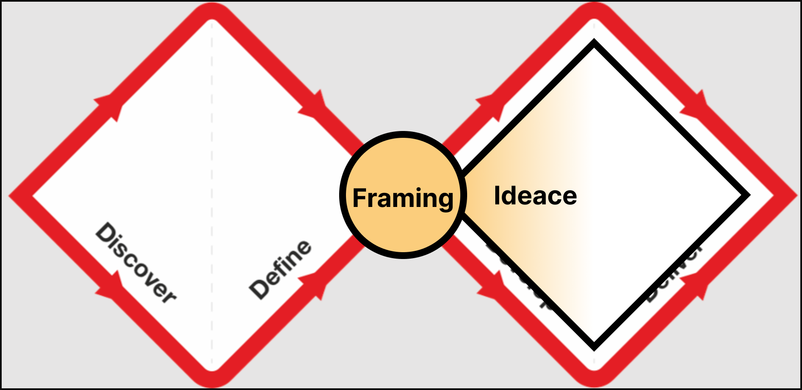

Service design workshop II
Problem framing a úvodní ideace
Erik Vaněk, 06.03.2025
Co dnes čekat?
- Rozdělení k projektům – jak jste na tom?
- Detaily k projektům a nábor do testování
- Design thinking 101
- Problem framing workshop
- Ideační techniky
- Nástroje na řízení projektů
- Zadání domácí práce
Rozdělení k projektům
-
Týmy
- Témata
- Jak šlo tohle?
- Máte otázky?
- Potřebujete něco?
- Dnes s nimi budeme pracovat
Projekty více do detailu
- Finální prezentace výstupů na posledním setkání 15.5.
- Víte, že nemůžete? Dejte vědět předem prosím
- Nebudu kontrolovat postup – občas se zeptám, ale rád to nechám na vás
- Kdyby něco chybělo – ptejte se!
- Doporučuju vzájemně napříč týmy sdílet a získat tak cennou vazbu
Fáze projektu
- Formulace výzvy
- Ideace nápadů
- Tvorba prototypu/ů
- Ověření funkčnosti
- Iterace
- Finální zpráva
Doporučené termíny
- ☑️ 20.3. designová výzva a ideace možných řešení
- ☑️ 3.4. prioritizace a volba nejvíce slibných cest
- ☑️ 17.4. první verze prototypu/ů
- Tohle je dost klíčový moment
- ☑️ 1.5. otestovány prototypy
- ☑️ 8.5. iterace prototypu
- 🔥 15.5. prezentace na finálním setkání 🔥 (zbývá 70 dní)
Nábor do testování
- Nábor nemáte pod kontrolou 🌀
- "Nějak se to udělá" často končí blbě
- Zamyslete se
- Kdo je vaše cílová skupina?
-
V druhé půlce dubna se s ní potřebujete setkat
- Jak ji získáte?
- Doporučuju začít řešit už teď a plánovat dopředu
Design thinking 101
- Všichni jsme kreativní!
- Koncept popularizovala agentura IDEO
- Kreativita jako stav mysli ne jako (ne)danost
- Střídání rozbíhavého a sbíhavého myšlení
- Rozbíhavé ~ "divergentní" ("Ano, a ...") – generování spousty nápadů
- Sbíhávé ~ "konvergentní" ("Ano, ale ...") – redukce a prioritizace
Problem a solution space
- Problem space – Discovery
- Zkoumá podstatu problému a cílové skupiny
- Rozhovory, focus groups, etnografie, pozorování, ...
- "Solving the right problem"
- Solution space – Delivery
- Hledá ta správná řešení
- Prototypování, prioritizace, uživatelské testování, iterace
- "Solving the problem right"
Service design a design thinking
- Silně spjaty
- Service design využívá techniky z design thinking
- Stejně jako UX, CX, architektura, marketing, ...
- V kurzu úplně nebudeme rozlišovat
Mindset
- Creative confidence
- Karaoke confidence
- "Yes, and ..."
- Nápady jsou levné
- Umět zahazovat nápady
Problem framing a ideace

Problem framing
- Už toho hodně víme
- Máme za sebou výzkum
- Formulovali jsme klíčová zjištění
-
Motivace:
- "If I had an hour to solve a problem I'd spend 55 minutes thinking about the problem and five
minutes thinking about solutions."
- Albert Einstein
Problem framing II
- Lidi jsou dobří problem solveři
- Mrkněte na inzeráty na práci
- Problém framing jako lék na solucionismus
- Spousta přístupů, technik, nástrojů
Problem framing – přístupy a techniky
Co vybrat?
- Je to jedno 🙃
- Respektive není, ale vyberte si něco, co zvládnete
- Doporučím vyzkoušet
- Designovou výzvu (kolaborativně)
- 5Ws & 1H
- + v kombinaci s Gen AI pěkný storytelling ✨
- Problem statements – vychází z předchozího
Dobře definovaný problém
- Když jej předám člověku bez jeho znalosti tak mu snadno porozumí
- Nepoužívá odborný jazyk a složité termíny
- Je zaměřený na uživatele
- Vychází z nasbíraných dat
- Neobsahuje řešení
5 Whys
- Než se dostaneme k výzvám pojďme trošku do hloubky
- Strašně silná technika hledající podstatu problému
-
Rozdělte se do vašich týmů
- 5 x 2 minuty
- Proč nastal problém, který řešíte? Proč se to děje? Jaké příčiny k tomu vedou?
- Může být více odpovědí
Designové výzvy
- JBM nebo HMW
- "Jak bychom mohli ... ?"
- "How might we ... ?"
- Cíl – vydefinovat problém pomocí vhodně formulované otevřené otázky, která začíná formulací
"Jak
bychom mohli ... ?"
- Otázka by neměla být ani úzká, ani široká
Výzvy v e-commerce
- ❌ Jak bychom mohli upravit velikost a barvu tlačítka 'Odeslat' v registračním formuláři?
- Moc specifická a nenechává prostor
- ❌ Jak bychom mohli zlepšit digitální zkušenost našich uživatelů?
- Hodně obecná a hodně se nám to pak "rozplizne"
- ✅ Jak bychom mohli zlepšit proces dokončení nákupu v naší mobilní aplikaci?
Výzvy v lázeňství
- ❌ Jak bychom mohli potěšit hosty našich lázní?
- Hodně obecná a hodně se nám to pak "rozplizne"
- ❌ Jak bychom mohli změnit barvu formulářů na recepci našeho lázeňského zařízení z bílé na světle modrou, aby
lépe ladily s novým logem?
- Moc specifická a nenechává prostor
- ✅ Jak bychom mohli zjednodušit proces registrace hostů v našich lázních, abychom zkrátili
dobu čekání na
recepci o polovinu?
Jak bychom mohli ... ?
- 5 minut – proberte problém, který v projektu řešíte
- kdo jej má, v jakém kontextu je, ...
-
5 minut – každý sám zkuste vygenerovat alespoň 3 "Jak bychom mohli ... ?" výzvy adresující ten problém
- 10 minut – nasdílejte si v rámci týmu a hledejte
- vzájemné překryvy, inspirace a možnosti pro vylepšení
Jak bychom mohli ... ? II
- Zkuste za 10 minut dát dohromady 1 – 3 společné výzvy, se kterými jste v týmu spokojeni a kterými byste se
chtěli zabývat ve zbytku semestru
- Nejspíš budete "míchat" prvky z jednotlivých výzev z předchozího kroku dohromady
- Dejte vědět kdybyste potřebovali pomoct
- Na závěr vzájemné sdílení
Sdílení
- Téma projektu
- 1 – 3 společné výzvy
- Jak jste k nim došli?
Ideace 🚀
- Máme výzvu – teď zábava 🔥
- Generovat je snazší než vybírat a zahazovat
- Spousta různých technik
- Některé víc, některé míň strukturované
AI-asistovaná ideace
- Vyzkoušejte si
- Gen AI sice může "halucinovat", ale pro ideaci to nevadí
Obecný postup
- Vygenerovat spoustu nápadů
- Vzájemné sdílení
- Hledání podobností a formování shluků (clusterů)
- Prioritizace a výběr těch zajímavých
- Překlopení do konvergentního myšlení
Brainwriting
- Asi nejznámější technika
- Jistě spousta z vás zná
- Výhoda – posiluje introvertnější členy a členky týmu
- Každý individuálně po svým generuje nápady na post-ity
- Nemáme kam s nima moc tady v tom prostoru 🥶
Crazy 8s
- Je to trošku divočina 🤪
- Naučí vás to rychle generovat nápady
- 3x přeložte papír
- Vždycky stopnu minutu a budete kreslit nápad, který by mohl pomoci řešit vaši výzvu(y)
Než začneme
- Osvěžte si, co už o problému víte
- Máte nějaké výpisky z výzkumu?
- Jaký je kontext?
- K čemu jste došli u 5 Whys?
- K jakým výzvám jste došli?
- Jaká řešení toho problému už vás napadly?
- Dejme tomu 5 – 10 minut
Crazy 8s
- Máte minutu na jeden nápad
- Může být úplně nový
- Remix předchozího
- Text, obrázek, diagram, ...
- Není důležitá kvalita, ale obsah sdělení
Vzájemné sdílení
- Udělejte si kolečko a každý popište 3 svoje nejlepší nápady
- Nemusíte úplně do detailu – popište koncept a proč je to dobrý řešení
První malý koncept
- Teď jste si vygenerovali spoustu nápadů možných řešení
- Něco jste vymysleli sami, něco okoukali jinde
- Zkuste teď dát dohromady ucelenější návrh, který už bude mít nějakou rozumnou podobu
- Máte na to 15–20 minut
- Opět libovolný formát
- Budu rád když někdo budete chtít na konci sdílet
- Pojmenujte ho!
Práce na doma
- Podívejte se na výzvu, kterou jste si dali dohromady
- Jste s ní spokojeni?
- Pokud ano, tak super
- Pokud ne, tak zkuste najít cesty pro její vylepšení
- Může pomoct reframing nebo scamper nebo 100 metod
- A nebo prostě začněte znova
Práce na doma
- Druhá forma ideace
- Společný brainwriting
- Mindmapy
- AI-assisted ideace
- 6-3-5
- Storyboarding
- Thinking hats